Паттерны
Паттерны организации времени как ориентируется и планирует
Дефицит времени
Недостаточно времени для выполнения задач. Постоянное чувство перегруженности работой и обязанностями. Испытывает трудности в расстановке
приоритетов. Делает несколько дел одновременно. Частое ощущение тревоги и стресса.
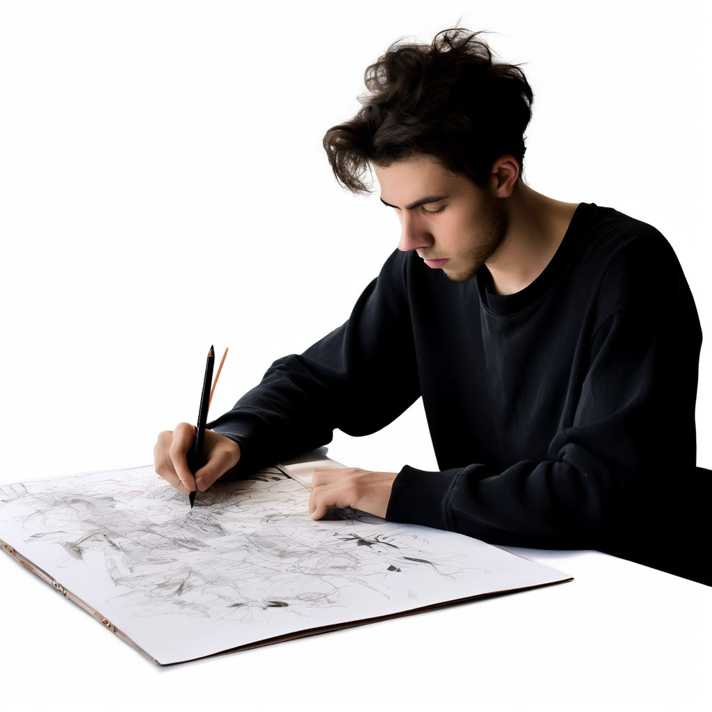
Изобилие времени
Достаточно времени для всех своих дел. Эффективно планирует задачи и мероприятия. Умеет сбалансировать работу и личное время. Обладает
высокой продуктивностью при выполнении задач. Ощущение контроля над временем.
Монохронность
Концентрация на одном виде деятельности и/или отношениях в один момент времени. Время структурировано. Часто следует строгим графикам и
дедлайнам. Ориентирован на достижение конкретных результатов. Стремится к максимальной эффективности и производительности.
Полихронность
Концентрация одновременно на нескольких задачах и/или отношениях. Может легко переключаться между задачами и не испытывает дискомфорта при
выполнении нескольких задач параллельно. Легко адаптируется к изменениям и непредсказуемым ситуациям, ценит возможность действовать по
обстоятельствам. Нацелен на сам процесс, включая межличностные взаимоотношения и коммуникацию.
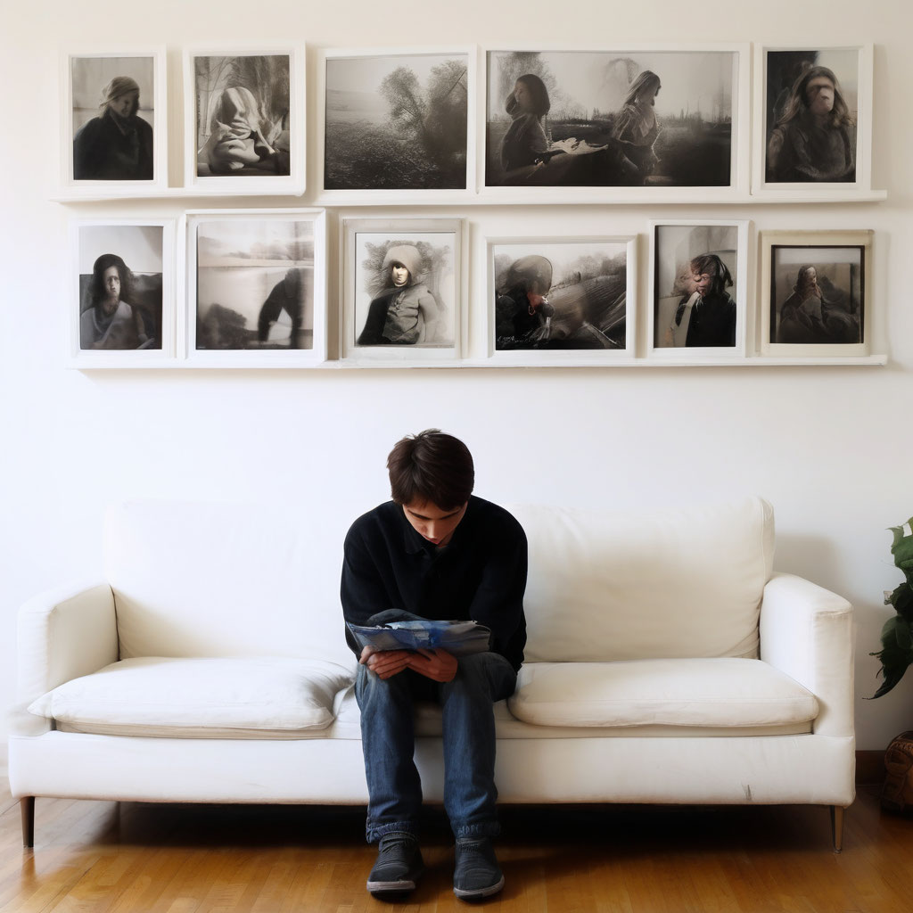
Прошлое
Сосредоточен на событиях и опытах, которые произошли ранее, часто анализируя и оценивая их влияние на настоящее и будущее. Рефлексирует о
прошедших хороших временах. Получает удовольствие от воспоминаний о прошлом.
Настоящее
Сосредоточен на текущем моменте, живет "здесь и сейчас" и стремится максимально использовать настоящее. Умеет находить радость и
удовлетворение в повседневной деятельности.
Будущее
Сосредоточен на том, что произойдет впереди, строит планы и планы на будущее. Ставит долгосрочные цели и стремиться их достичь. Испытывает
интерес к новым технологиям, идеям и возможностям. Стремится к постоянному развитию и совершенствованию.
Краткосрочная стратегия
Живет здесь и сейчас, планирует короткими отрезками времени: неделя, месяц, квартал. Планы часто меняет, не ориентируется на свое видение
будущего.
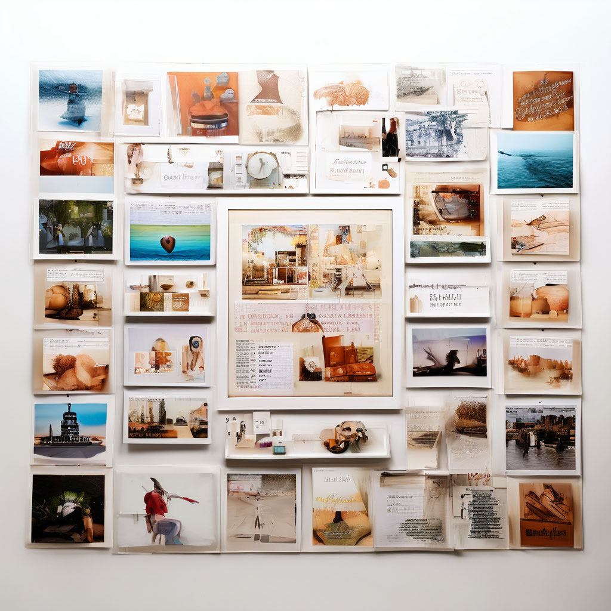
Долгосрочная стратегия
Важен жизненный план на будущее. Планирует на год или несколько лет вперед.
Паттерны поведения как делает
Контроль
Стремление активно управлять своей жизнью и окружающими обстоятельствами. Стремление к идеальным результатам, высоким стандартам и
требованиям к себе и окружающим.
Гармония
Сосредоточенность на достижении баланса и согласованности в различных аспектах жизни. Стремление к внутреннему и внешнему равновесию,
поддержанию гармоничных отношений с окружающими.
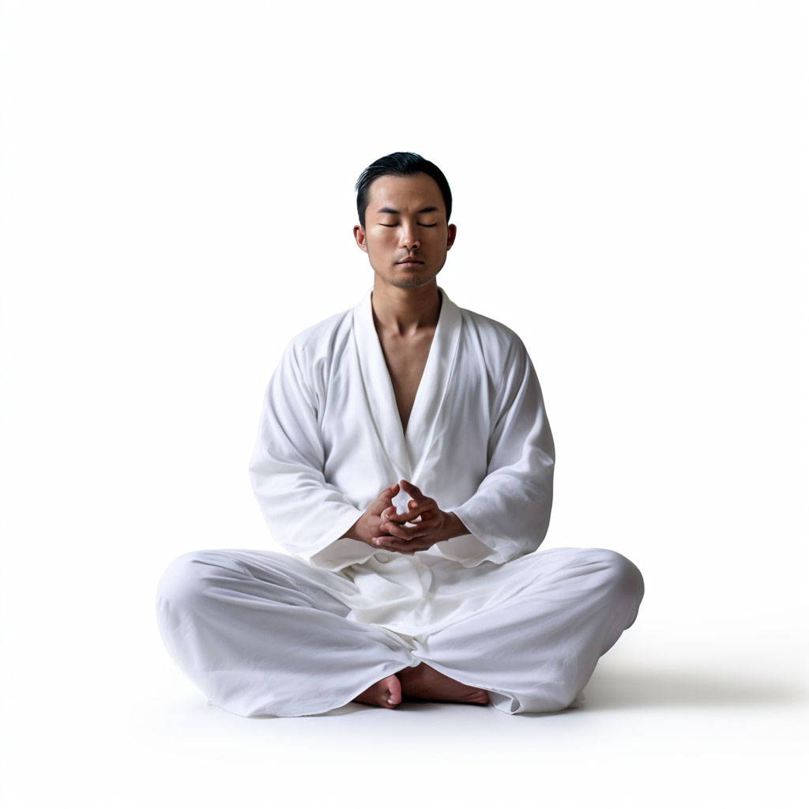
Смирение
Осознанное и спокойное принятие реальности такой, какая она есть. Готовность адаптироваться к изменяющимся обстоятельствам.
Защищать границы
Стремление защищать свои личные, эмоциональные, физические и социальные границы, а также уважать и защищать границы других людей.
Устанавливает и поддерживает чёткие границы для избежания вторжения или чрезмерной нагрузки. Способен распознавать и защищать свои
эмоциональные потребности, избегать токсичных отношений и ситуаций, которые могут повредить эмоциональному состоянию. Ясно и прямо выражает
свои потребности, ожидания и ограничения, не позволяя другим игнорировать или нарушать эти границы. Способен противостоять попыткам
манипуляций и давления со стороны других людей, сохраняя при этом свою автономию и независимость.
Делиться ресурсами
Стремление индивида или группы делиться своими ресурсами, как материальными, так и нематериальными, с другими людьми или организациями для
развития сотрудничества, повышения общего благосостояния и укрепления социальных связей. Делится информацией, опытом и навыками с теми, кто
в этом нуждается, способствуя тем самым росту и обучению других. Предоставляет свои ресурсы без ожидания немедленной обратной выгоды.
Понимает и учитывает потребности других людей, делая акцент на помощь и поддержку.
Быть
Акцентирует внимание на текущих ощущениях, мыслях и переживаниях, не отвлекаясь на прошлое или будущее. Глубокое осознание своего
существования и внутреннего состояния, окружающей среды. Принимает самого себя и обстоятельства такими, какие они есть, без необходимости их
изменения в данный момент. Стремится к внутренней гармонии и балансу, ощущая себя частью мира, природы, общества. В стрессовых ситуациях
сохраняет фокус на выполнении задач.
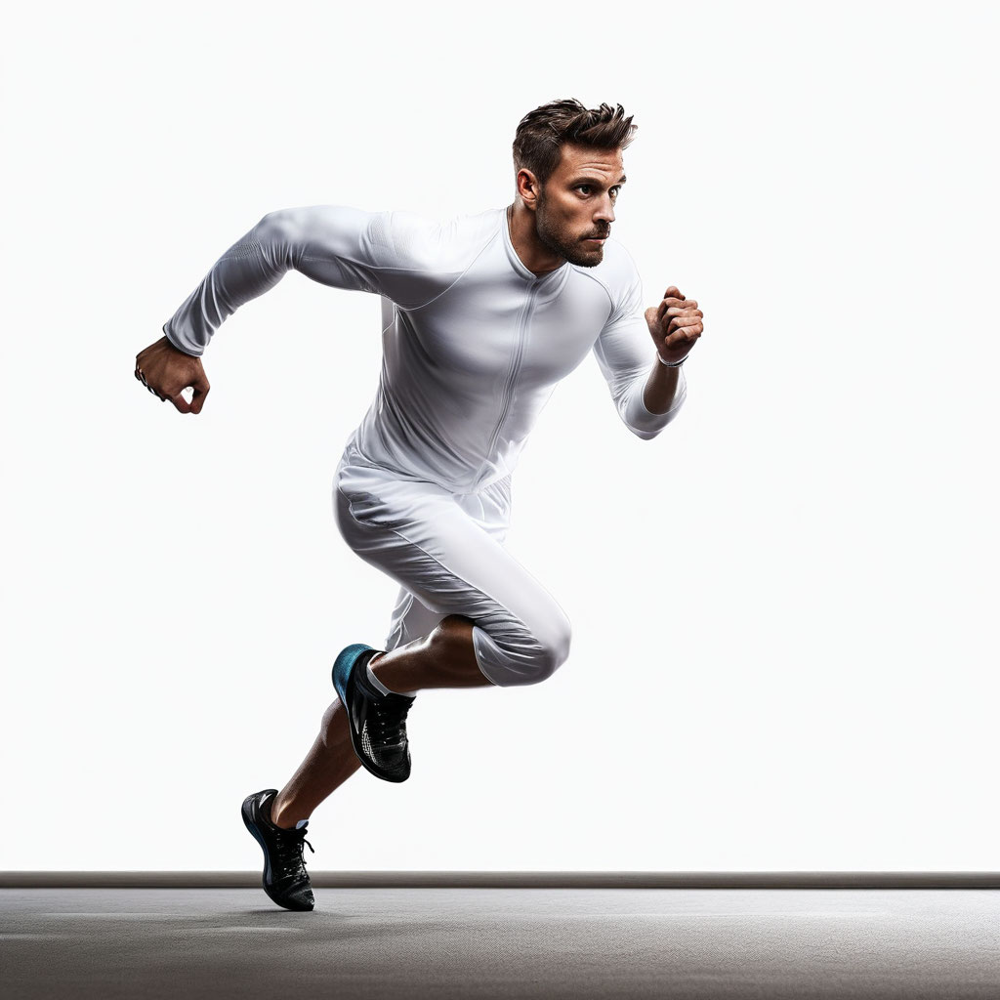
Делать
Акцентирует внимание на активных действиях, достижении целей и прагматическом подходе к решению задач. Ориентируется на конкретные
результаты и практическую пользу от своих действий. Обладает высоким уровнем внутренней мотивации, активной жизненной позиции, а также
склонностью к социальным взаимодействиям и сотрудничеству. Чётко понимает цели и планирует шаги для их достижения. Проявляет инициативу и
готовность к самостоятельному принятию решений и действий.
Индивидуализм
Делает акцент на личных достижениях, амбициях и саморазвитии. Придает большое значение личной свободе и независимости. Стремится принимать
решения самостоятельно, проявляет свои индивидуальные качества, способности и идеи.
Коллективизм
Акцент делает на коллективные цели, сотрудничество и сплоченность. Высоко ценит взаимопомощь и поддержку внутри группы. Рассматривает себя
как часть большего целого и стремится поддерживать гармоничные отношения.
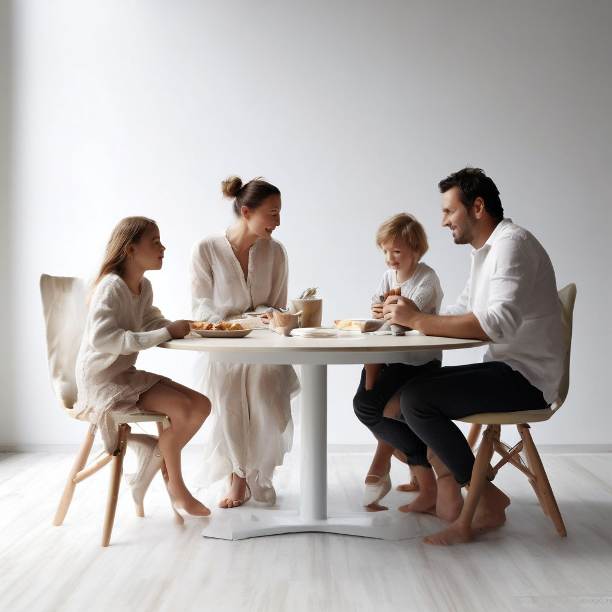
Стабильность
Стремится поддерживать последовательность, постоянство и предсказуемость в своей жизни или окружении. Обладает неизменными факторами,
которые создают ощущение безопасности и комфорта, и способствуют более спокойному существованию.
Изменения
Стремится к адаптации и развитию, ищет новые возможности и готов рисковать ради достижения лучших результатов. Склонен к принятию новых
концепций, технологий и методов работы. Рассматривает изменения как источник роста и улучшения.
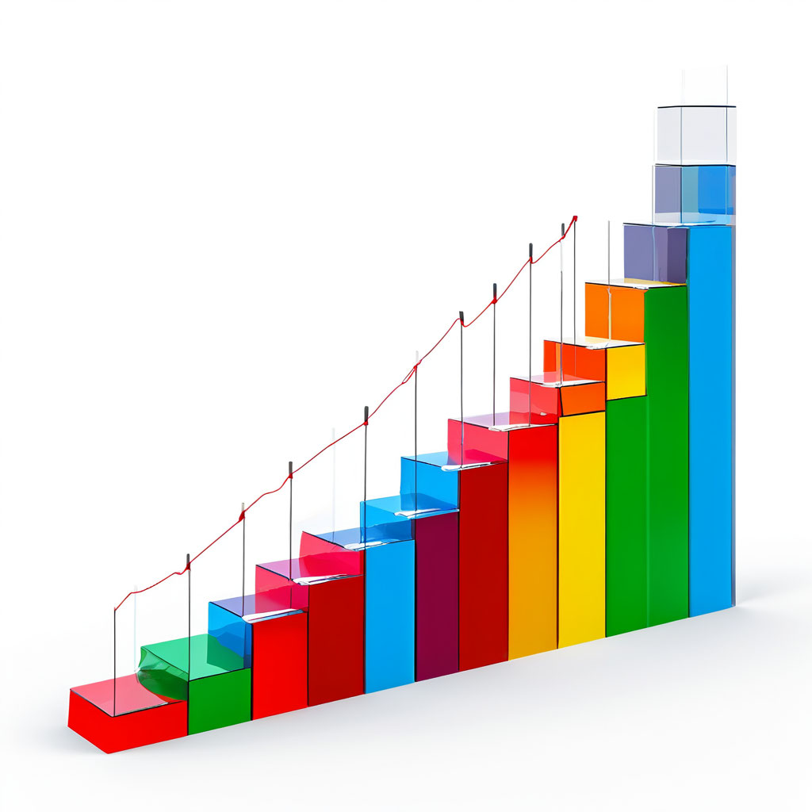
Конкуренция
Стремится преуспеть в сопоставлении с другими. Любит соревноваться и достигать успеха за счет превосходства над конкурентами.
Сотрудничество
Стремится к совместной работе, взаимодействию и объединению усилий для достижения общей цели.
Паттерны коммуникации как чувствует и взаимодействует
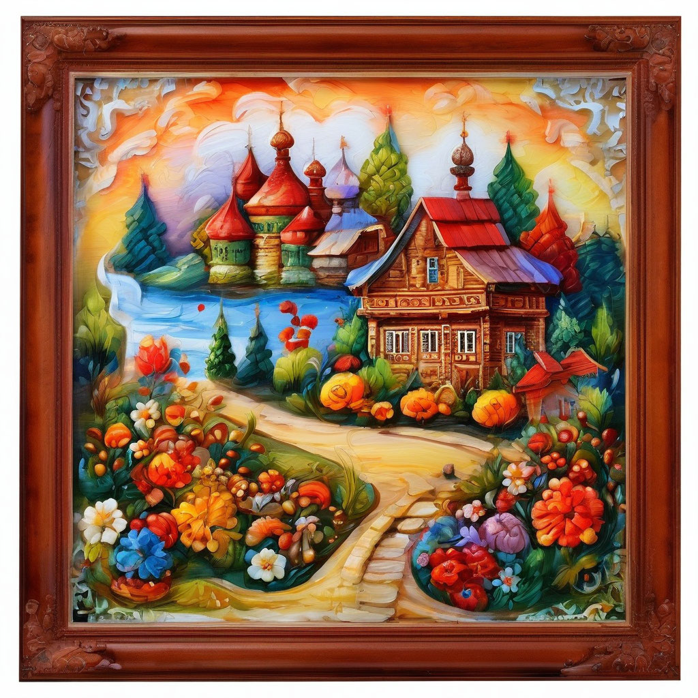
Высокий контекст
Большую часть информации передает неявно, через контекст, невербальные сигналы, ситуацию, общие знания, учитывая эмоциональные аспекты и
нюансы. Значение часто зависит от межличностных отношений и обстоятельств.
Низкий контекст
Информацию передает более открыто и непосредственно через речь. Акцент делает на ясности, логичности и четкости сообщений. Здесь меньше
места для интерпретаций, и внимание уделяет фактам, а не эмоциям или контексту.
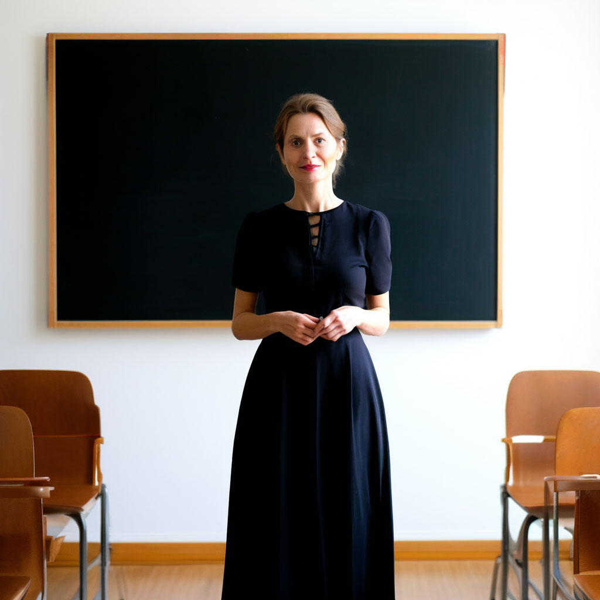
Прямая коммуникация
Четко и однозначно формулирует мысли. Отдает предпочтение конкретным высказываниям и прямым вопросам, чтобы избежать недоразумений. Важна
минимизация двусмысленностей и обратная связь.
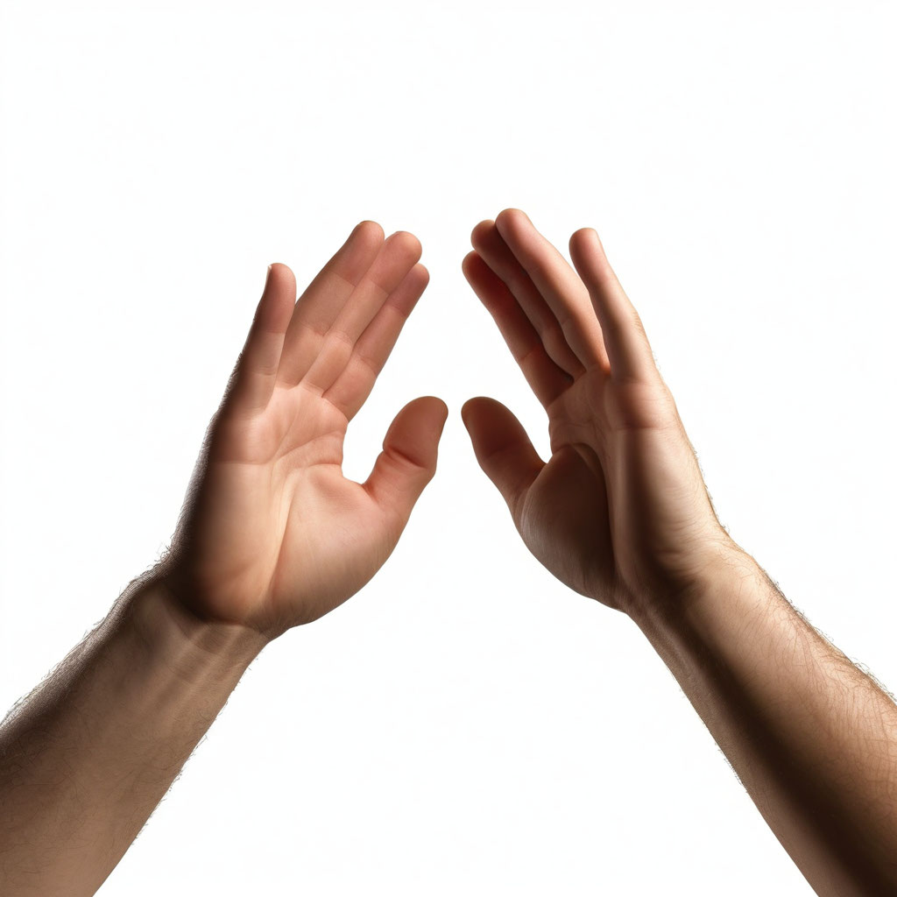
Непрямая коммуникация
Сильно зависит от контекста. Многое подразумевает, и большее значение придает невербальному общению, тону голоса, жестам и прочим деталям.
Важна осторожность в формулировках, чтобы не задеть чувства.
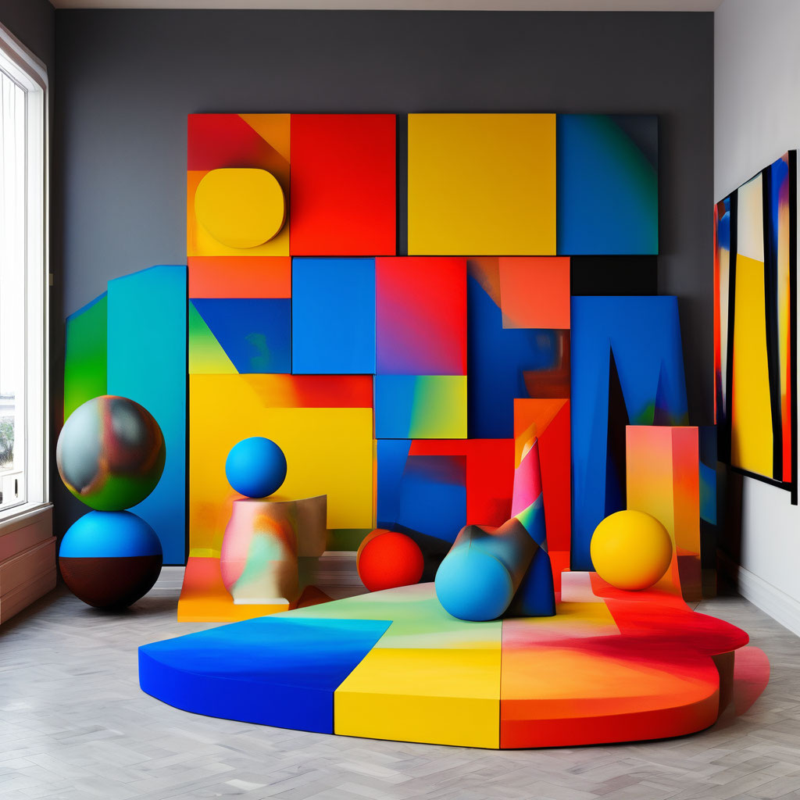
Эмоциональность
Способствует созданию близости, доверия и поддержания отношений между участниками общения, облегчая процесс обмена идеями и мнениями.
Проявляется в невербальных сигналах, таких как интонация голоса, мимика и жесты. Яркие эмоции выражает через усиленное изменение тона,
объема голоса или динамику движений.
Нейтральность
Использует факты и информацию без выражения личных эмоций, оценок и переживаний. Создает ясные границы, важные для профессионального общения
и соблюдения этикета в формальных ситуациях, что помогает избегать недоразумений и обеспечивает более объективный подход к обсуждаемым
темам.
Формальность
Формальный стиль общения. Язык более структурированный и грамматически правильный. Использует полные предложения и сложные конструкции.
Избегает эмоций и личных мнений, акцентируя внимание на фактах и логике.
Неформальность
Неформальный стиль общения. Использует разговорные выражения, сленг и сокращения. Язык более легкий и непринужденный, часто включает в себя
выражение эмоций, мнений и субъективных оценок.
Паттерны мышления как думает
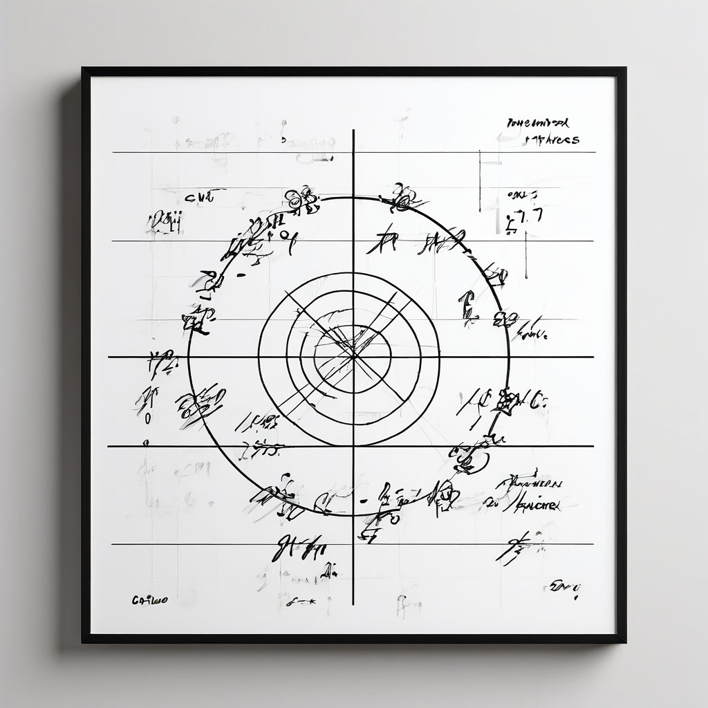
Дедуктивное мышление
Работает от общего к частному. Формирует логическое обоснование и выводы на основе общих принципов или аксиом, начиная с общего утверждения
и, переходя к конкретным случаям, а затем к специфическим заключениям. Обеспечивает более высокий уровень уверенности в выводах, поскольку,
следует логическим принципам.
Индуктивное мышление
Работает от частного к общему. Включает сбор данных, наблюдений и фактов, которые затем обобщаются для формирования более широких выводов
или теорий. Касается вероятностных выводов и всегда включает элемент неопределенности.
Аналитичное мышление
Разбивает сложные задачи на более мелкие, управляемые элементы и исследует каждую часть отдельно с целью понимания и решения всей проблемы.
Определяет причинно-следственные отношения между различными элементами, сравнивает данные и мнения, выявляет несоответствия и проверяет их
достоверность. Делает выводы на основе конкретных данных, чисел и фактов.
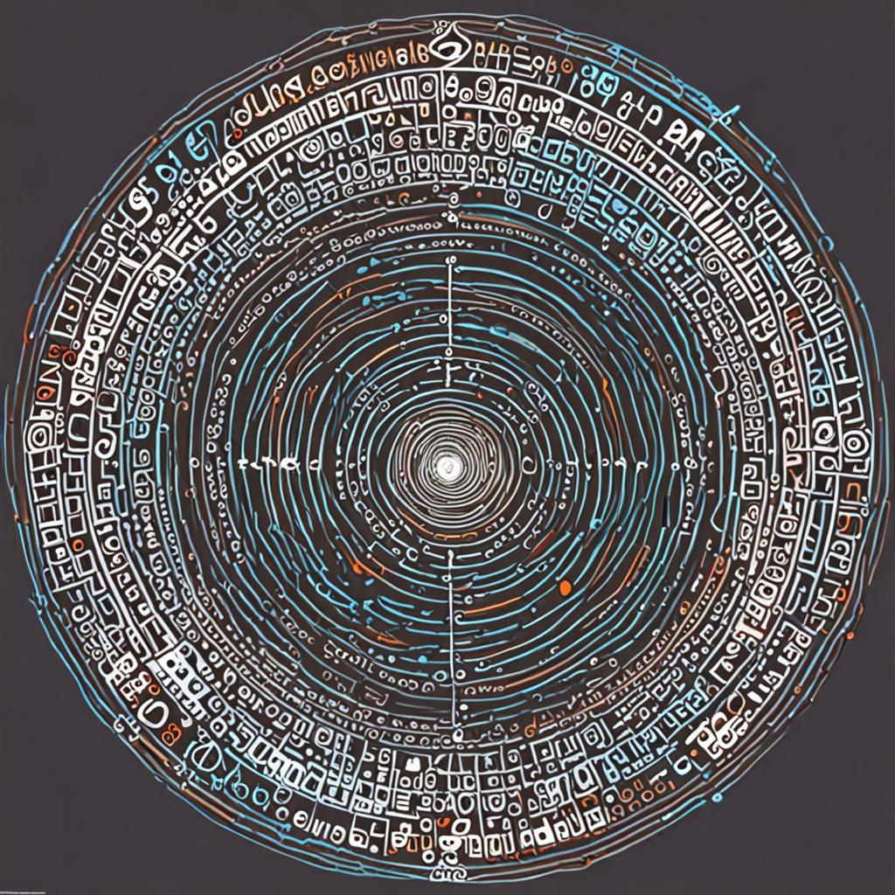
Системное мышление
Рассматривает всю систему в целом вместо отдельных ее частей. Изучает взаимосвязи между элементами системы, зависимости и взаимодействия.
Формирует модели для прогнозирования поведения систем. Ведет учет различных точек зрения и факторов, оказывающих влияние на систему.
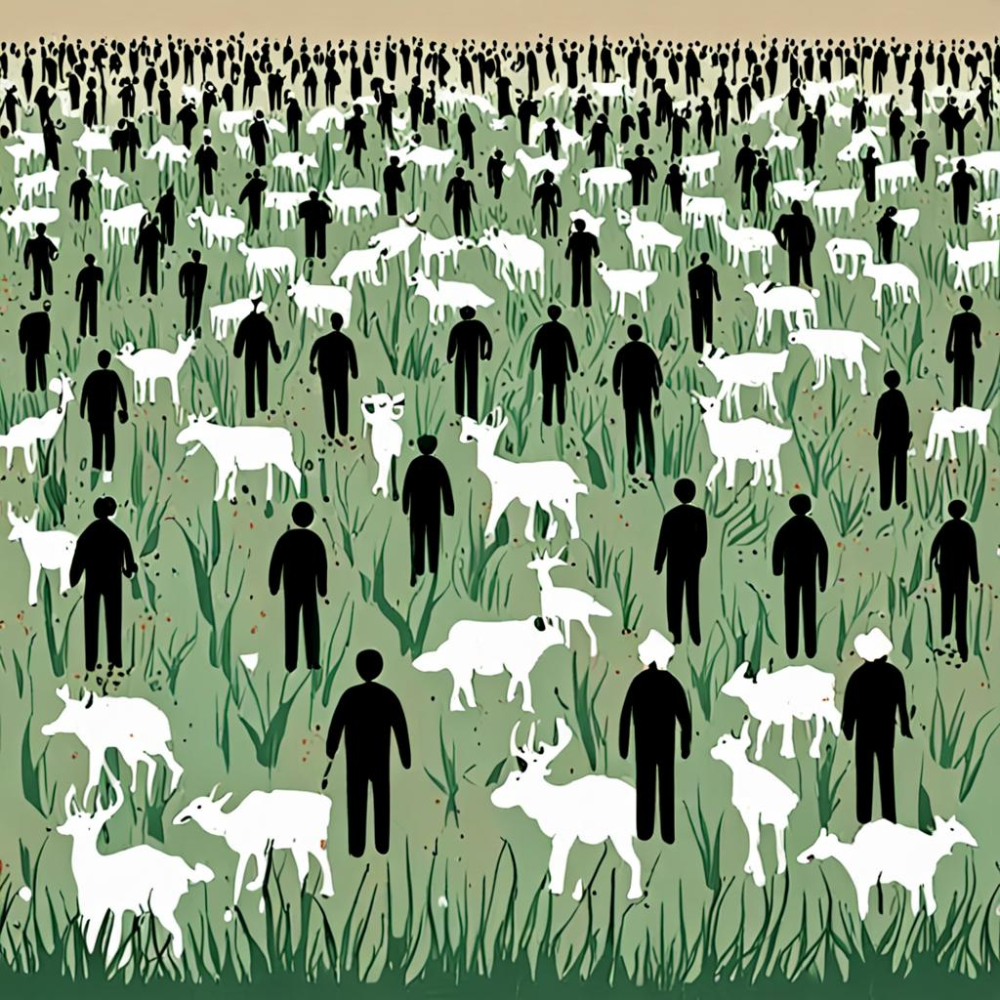
Полезависимость
Более чувствителен к социальным сигналам и стимулам, склонен к сотрудничеству и чаще стремится к поддержке и одобрению со стороны других.
Воспринимает мир в целом, могут возникать трудности с выделением деталей из общего контекста или фона. Склонен полагаться на внешние
подсказки и окружающий контекст при решении задач или принятии решений. Имеет тенденцию искать социальное взаимодействие и предпочитает
работу в группах, что помогает получать поддержку и подтверждение своих действий.
Поленезависимость
Склонность к независимым действиям и решению задач без внешней помощи. Способен работать более эффективно сам по себе. Легко выделяет детали
из сложного фона. При решении задач полагается больше на свои внутренние представления и меньше зависит от внешнего контекста или социальных
сигналов. Менее зависим от групповой поддержки и одобрения, предпочитает работать самостоятельно и может чувствовать себя комфортно в
одиночку.
Рефлексивность
Склонность принимать решения медленно, тщательно анализировать информацию и ситуации перед принятием решения. Избегает неоправданно
рискованных действий и предпочитает более безопасные и предсказуемые варианты. Настроен на достижение долгосрочных целей и не ищет
немедленного удовлетворения.
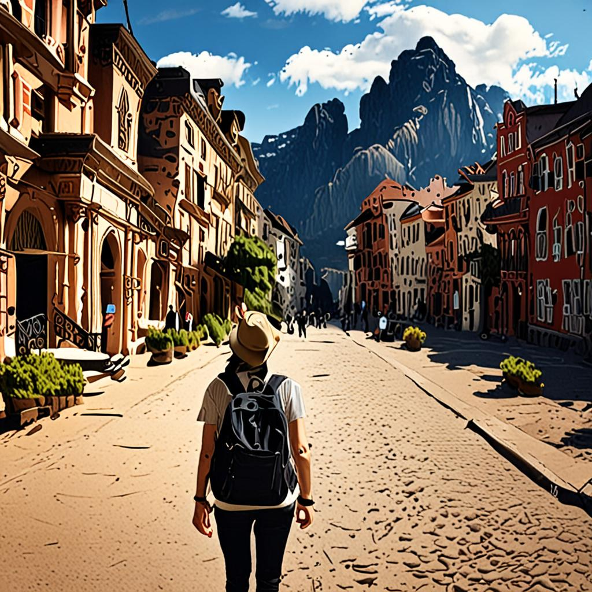
Импульсивность
Склонность принимать решения быстро, зачастую без тщательного обдумывания и анализа информации. Действия часто спонтанны и не запланированы.
Быстро реагирует в ситуации множественного выбора (выбирать одно). Не испытывает стресса в ситуации неопределенности. Более склонен к риску.
И испытывает трудности с поддержанием концентрации на одной задаче в течение длительного времени. Может легко переключаться на что-то новое
и интересное.